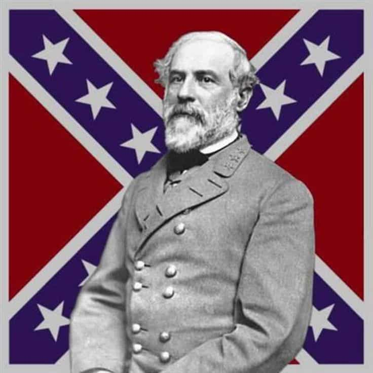
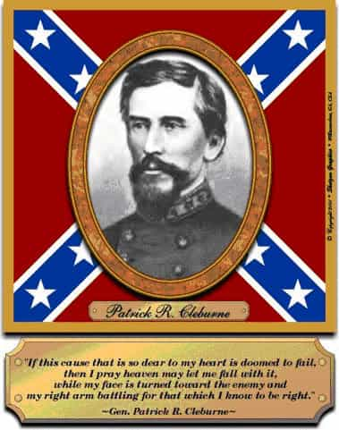

John Carver is a four year ROK veteran with over fifty articles of SJW-triggering truth bombs on archive. You can follow him on Twitter if you are so inclined.


If you have been paying attention to the news lately, left wing groups are taking down monuments to Confederate leaders like Robert E. Lee (a pro-constitution, anti-slavery, non-drinking, non-smoking, no-profanity pious Christian) faster than they are putting up new gender affiliations.
Why? Because two years since the murder of nine African-Americans in a Charleston church (which the left still just cannot shut up about), there has been a powerful SJW-dominated domestic jihad on any public memorials to the Confederate States of America. All because the white male perpetrator was seen holding Confederate memorabilia in a few pre-rampage photographs, most notably the “Confederate Flag” (more on this later).

Return of Triggers
SJW’s insist that the flag represents slavery, oppression, white supremacy, terrorism, Nazism, and a laundry list of other naughty buzzwords which are 100% unsuitable for our enlightened ‘social justice’ conscious nation.
However, just like Vox Day and his book have pointed out, SJWs Always Lie. This article will address four prominent examples of how left wing groups lie about the former Confederacy to try and achieve the moral high ground (virtue signal) and legitimize their desired destruction of Confederate memorials. Objects which countless European-Americans in southern states hold dear to their history and sense of regional identity.

Brazil was the last western territory to abolish slavery in 1888, but virtue signaling leftists want to pretend we would “still have slavery” in 2017 if the Confederacy won.
Of all the most retarded claims against the Confederacy, and of all the most lame virtue signaling efforts to try and fully legitimize the Union war effort from a contemporary perspective, is the “we’d still have slavery” argument. That is, assuming the Confederacy won the war and a hypothetical C.S.A. was alive and kicking in 2017.
However, did anybody in social justice la-la land get the memo that Brazil was the last Western country on Earth to abolish slavery in 1888? That’s just one human generation beyond the Emancipation Proclamation of 1863, and almost a full 130 years ago from this time of writing.
In the mid 19th century, slavery was going the way of the Dodo around the world, due to both rapid technological advancements in industrial societies rendering the cost-to-benefit analysis impractical, as well as it simply being the current moral zeitgeist of the age.
Yes, admittedly there was some damning rhetoric from some Confederate leaders supporting slavery in the 1860’s, but do pea-brained leftists and SJW’s truly believe that black slaves would still be purchased or sold via smartphone apps in a 1st world Atlanta of 2017 yet still developing and semi-dysfunctional Brazil would have otherwise been the last western territory to stop such nonsense 130 years prior?

Confederate Atlanta, Georgia in a retarded SJW dreamworld of 2017. A blonde “Buckhead Betty” is giddy and excited at purchasing a new well-built black slave on a Tinder-like auction app with her husband’s money. (The husband just told her to get a gardener, but when he’s away she has more “domestic chores” in mind).
Here is the truth that an emotion-driven leftist simply cannot comprehend. Chattel slavery would not have lived to the see the first day of the 20th century in a hypothetical and intact Confederate States of America. Assuming even the worst case scenario where Brazil actually beat the C.S.A. to abolition in the late 1880’s, by that point slavery would not only have been rendered completely irrelevant by industrial technology, but the international pressure for emancipation would be incredibly severe.
Beyond the industrial north, the powerful British and French colonial empires (the biggest world powers of the late 19th century) would likely have threatened or acted upon bottom-line bleeding trade sanctions and other isolating penalties. Inevitably, Confederate slavery would soon throw in the towel for good, and the modern C.S.A. (if it existed) would be incredibly apologetic for some aspects of it’s distant past. Much like any other browbeaten white-majority country in the 2010’s.
By the way, the world does indeed “still have slavery”. Except it’s almost entirely black African Muslims enslaving other black African Muslims in countries like Mauritania, which SJW’s and ‘Black Lives Matter’ don’t really seem to concern themselves with for obvious reasons.

This has had to repeated so many times, generation after generation, that the sheer level of willful ignorance on all sides of the debate should be on the verge of legendary.
The “Confederate flag” at it is popularly known today has absolutely no direct political affiliation whatsoever, unlike say…. the Nazi flag that modern day SJW’s are always trying to compare the flag with. It is a battle flag which was utilized primarily by Robert E. Lee’s Army of Northern Virginia, and upon careful observation it hardly “represents slavery” and certainly not “white supremacy”.
95% of Confederate soldiers did not own slaves, and I’m sure that the maintenance of “white supremacy” over their non-existent slaves was the number one thing on their minds as a 6-figure sum of southern white men (compared to a negligible amount of black soldiers on both sides) met their maker as a result of kissing some hot lead from a battlefield musket.
Furthermore, here are some quotes from the battle flag’s top general, Robert E. Lee himself.

In this enlightened age, there are few I believe, but what will acknowledge, that slavery as an institution is a moral & political evil in any country. It is useless to expatiate on its disadvantages.
While we see the course of the final abolition of human slavery is onward, & we give it the aid of our prayers & all justifiable means in our power, we must leave the progress as well as the result in his hands who sees the end; who chooses to work by slow influences; & with whom two thousand years are but as a single day.
So far from engaging in a war to perpetuate slavery, I am rejoiced that slavery is abolished. I believe it will be greatly for the interests of the South. So fully am I satisfied of this, as regards Virginia especially, that I would cheerfully have lost all I have lost by the war, and have suffered all I have suffered, to have this object attained.
Sound like the talking points of a pro-slavery and “white supremacist” bigot to you?
Southern states in 1861 follow the nations most revered document and peacefully convene to form new government. Get called “traitors” by 21st century SJWs.
This is one you’ll find in the comment sections of prominent left wing (lie wing) blogs and websites such as Washington Post, Salon, or Alternet when a Civil War related article is posted. The Confederacy was just full of “traitors” and all those evil white men deserved everything that was coming to them.
However, if any of them simply stopped being driven by virtue-signaling emotional rhetoric, and actually bothered to read a history book or two, their argument would be filled with bigger holes than Swiss cheese.
All the evidence clearly points out the Confederacy was peacefully following principles laid out by the founding fathers, the declaration of independence, and the 12 amendments of the U.S. constitution which were in place as of 1861. “Patriots” the Confederates may or may not have been. But “traitors” definitely not.

I am with the South in life or in death, in victory or defeat. I never owned a negro and care nothing for them, but these people have been my friends and have stood up to me on all occasions. In addition to this, I believe the North is about to wage a brutal and unholy war on a people who have done them no wrong, in violation of the Constitution and the fundamental principles of the government…We propose no invasion of the North, no attack on them, and only ask to be let alone. – Patrick R. Cleburne
(SJW Thom Hartmann’s spiel on Confederate “terrorists” at 21:24 – 22:52)
This preposterous label is a more recent attack on the history of the Confederacy, and almost as retarded as the SJW idea that the south would “still have slavery” in modern times if they won the mid 19th century conflict.
As you may already know, the left is currently obsessed with using a combination of fact omission, subterfuge, and red herring tactics to try and divert attention away from Islamic terrorism (a genuine problem), and instead tell you that “white terrorism” is the real scourge.
Of course, the politically incorrect (real life correct) statistics do not indicate that “white terrorism” is a major issue in the United States, considering that whites make up over 60% of the nations population while Muslims are barely 1%. So why not loosen the definition of a “white terrorist” to essentially include any Christian white man who has held a firearm against somebody before? With the Confederacy in mind, the SJW’s are granted their wish to demonize Christian, 2nd amendment-friendly, southern white males on a mass scale.
As for the true definition of terrorism, Hartmann and the rest of the SJW’s have a lot of nerve to act like the Union army never raped, pillaged, or terrorized the southern people via the policies of number 16 (Abraham Lincoln) and his wild lap dogs like General Sherman.

William Tecumseh Sherman. Union General, terrorist, and all-round mega bastard
My aim, then, was to whip the rebels, to humble their pride, to follow them to their inmost recesses, and make them fear and dread us. Fear is the beginning of wisdom.
War is cruelty. There is no use trying to reform it. The crueler it is, the sooner it will be over.
This war differs from other wars, in this particular. We are not fighting armies but a hostile people, and must make old and young, rich and poor, feel the hard hand of war.
I would make this war as severe as possible, and show no symptoms of tiring till the South begs for mercy. – William T. Sherman
Sound like the talking points and actions of someone who is anything but a terrorist to you?
Finally, here is a well made and researched video showing number 16’s cruel war of subjugation and terror against the south. (He is on the five dollar bill and has a giant monument in Washington D.C. which, unlike statues of the pro-abolitionist and pro-constitution Robert E. Lee, is unlikely to ever be removed.)
It is undeniable and unfortunate that the Confederate government (not Lee’s army) fought for the maintenance of slavery as one of it’s core objectives, despite it’s inevitably short-lived continuation in the event of victory.
It really does hamper and limit the amount of praise which can be given to this short-lived nation from a contemporary viewpoint. Because otherwise, many of their reasons for seeking secession from the federal government were sound, understandable, and above all legal.
However, I will also not stand idly by and watch SJW’s use slavery or “white supremacy” or “white terrorism” as a crutch to lie profusely about the Confederacy for political brownie points and agendas which are designed to further browbeat and humiliate 21st century southern Whites. The Union side of the conflict got their hands really dirty on plenty of things as well.
Pun intended, the history of the Civil War is not as ‘black and white’ as the left wants to make it out to be.
Read Next: Reflections On Neo-Confederacy During A Visit To Ole Miss